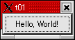
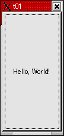
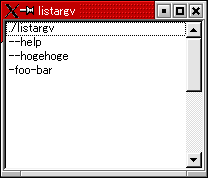

トップページ＞＞＞
「ぷろぐらみんぐ」目次＞＞＞
「Qt Tutorial Index Page」
Chapter 1: Hello, World!
初版作成：2002/12/26
- ソースコード
- 解説
- コンパイル・動作確認
- いじくりまわす

最初のプログラムはシンプルな「Hello, World」です。このサンプルではQtアプリケーションを作成し、実行するための
最低限の構成を紹介しています。上の絵がサンプルの実行時のスナップショットです。
/****************************************************************
**
** Qt tutorial 1
**
****************************************************************/
#include <qapplication.h>
#include <qpushbutton.h>
int main( int argc, char **argv )
{
QApplication a( argc, argv );
QPushButton hello( "Hello world!", 0 );
hello.resize( 100, 30 );
a.setMainWidget( &hello );
hello.show();
return a.exec();
}
目次に戻る
#include <qapplication.h>
この行はQtアプリケーションのベースクラスとなるQApplicationクラスの定義ヘッダーファイルをインクルードしています。
Qtアプリケーションでは（殆どの場合）QApplicationクラスのオブジェクトを一つ作成します。QApplicationはアプリケーション
の様々なリソースを管理します。たとえばデフォルトフォントやカーソルなどです。
BCBやDelphiやってる人なら一発で「ああ、TApplicationか。」とぴーんと来るはず。その通りでした。
#include <qpushbutton.h>
QPushButtonのクラス定義ヘッダーファイルをインクルードしています。
ボタンを使うようなアプリケーション（よーするに殆どすべてのアプリケーション）ではこれをインクルードする必要があります。
まあ、GUIプログラミングではずっと使われてきてます。
んで、QPushButtonってゆーのはQWidgetから派生してます。
QWidget・・・よーするにウィジェットと呼ばれてるシロモノですが。Windowsプログラマー向けにすっげー乱暴にたとえてしまえば、
Win32APIで言うところの Controls であり、BCB,Delphiで言うところの VCL であるとしても問題ないでしょう。
んでもってオブジェクト指向で作られていますので、プロパティを変更することによって色とかテキストとか変更できます。
んで、BCBのTButtonとかでもそうであったように文字だけでなく絵もQPixmapクラスを利用して表示できます。
int main( int argc, char **argv )
{
これは今更解説する必要もないでしょう。argcが引数の数、argvが引数文字列へのポインタ。
WindowsとかDOSではmainの戻り値がvoidになっているのも多いですが、UNIXではintとして、実行結果を返せるようにするのが
作法みたいです。
んで、QApplicationクラスには引数を処理する機構が内蔵されています。そのため、QApplicationを作成するときにコンストラクタに
引数としてargc, argvを渡します。
QApplication a( argc, argv );
QApplicationクラスのオブジェクトを作成しています。んでですね。tutorialの原文ではこんな事が書いてあるんですよ。
Note that all command-line arguments recognized by Qt are removed from argv (and argc is decremented accordingly).
素直に読むなら、「Qtにより処理されるコマンドライン引数は、argvから外されます。それと一緒にargcもデクリメント
されて行きます。」ですよね。ちょっとばっかし気になったので、ドキュメントを引いてみました。すると、こんなサンプルが
載っています。
Example:
// showargs.cpp - displays program arguments in a list box
#include <qapplication.h>
#include <qlistbox.h>
int main( int argc, char **argv )
{
QApplication a( argc, argv );
QListBox b;
a.setMainWidget( &b );
for ( int i=0; i<a.argc(); i++ ) // a.argc() == argc
b.insertItem( a.argv()[i] ); // a.argv()[i] == argv[i]
b.show();
return a.exec();
}
・・・BCBとかDelphiでも見かけそうな・・・って、TListBox.InsertItem()そのまんまではないですか！？
とにかく。こんな感じでQApplicationでは（多分）簡単にコマンドライン引数にアクセスできる様にしてくれてます。
横道にだいぶそれたので戻ります。ここで注意ですが、Qtでは他のいかなるウィンドウのウィジェットよりも先に
QApplicationオブジェクトが作成されるようにしてください。だ、そうです。
QPushButton hello( "Hello world!", 0 );
ここでQPushButtonクラスのオブジェクトを作成しています。コンストラクタはこれを使っていると思われます。
QPushButton::QPushButton ( const QString & text, QWidget * parent, const char * name=0 )
QStringってゆーのはBCBで言うところのAnsiStringと殆ど一緒です。VCならCStringとかいうクラスにあたるのかな？
QWidgetでparentとゆーのが渡されますが、WinAPIで言うところのhWndParentみたいな。親ウインドウ。そのまんまです。
0 が渡されると親ウインドウなし、と判断されるようです。HWND_DESKTOPを親ウインドウに指定した、みたいな。
nameはウィジェットに付けるIDみたいなもんです。
hello.resize( 100, 30 );
ここで、幅100ピクセル、高さ30ピクセルに調整されています。今回はボタンの位置は気にしてません。デフォルト値を
そのまんま使ってます。
a.setMainWidget( &hello );
ここがポイントといえばポイントで。BCBで言うなら"Application.CreateForm()"みたいなもんですか。とにかく、ここで「
アプリケーションのメインウィジェット（Windows風に言うならメインウインドウ）を設定しています。
メインウィジェットは設定する必要は無いんですが、殆どのプログラムは設定してます。
hello.show();
Win32APIのShowWindow()ですね。あるいはTForm::Show()ですか。作成した段階ではまだ可視状態(Visible)ではありません。
show()メソッドで明示的に可視状態(Visible)にする必要があります。
return a.exec();
}
・・・TApplication::Run()ですか。
メインイベントループに入ります。exit()が呼ばれるか、メインウィジェットが破棄されるまでループは回ります。
メインイベントループはウインドウシステムからイベントを受け取り、アプリケーションのウィジェットへディスパッチ
します。
・・・ここら辺は原文のままの方がよっぽどすっきり書かれてる。結局全部カタカナのままになってしまうのだし・・・。
Enters the main event loop and waits until exit() is called or the main widget is destroyed,
and Returns the value that was set via to exit() (which is 0 if exit() is called via quit()).
It is necessary to call this function to start event handling.
The main event loop receives events from the window system and dispatches these to the application widgets.
Generally speaking, no user interaction can take place before calling exec().
As a special case, modal widgets like QMessageBox can be used before calling exec(),
because modal widgets call exec() to start a local event loop.
To make your application perform idle processing, i.e. executing a special function whenever there are no
pending events, use a QTimer with 0 timeout.
More advanced idle processing schemes can be achieved by using processEvents() and processOneEvent().
This is where main() passes control to Qt. exec() will return when the application exits.
不正確なのを承知で要約すれば、一般にQApplicationのexec()を呼び出す前はユーザーとの対話はしないんだけどQMessageBox
みたいなのだけはオッケーだよ、と。んでアイドリングなんかを実現したいときは QTimer をタイムアウト0で使うか、processEvents()
とprocessOneEvent()とか使ってくださいよ、と。
目次に戻る
んじゃあ、コンパイルしてみましょう。
t01というディレクトリ中に、冒頭のソースコードを記述したt01.cppというソースコードファイルが置かれているとします。
[fenjin@seisyuu qt_tutorials]$ ls
t01/
[fenjin@seisyuu qt_tutorials]$ cd t01/
[fenjin@seisyuu t01]$ ls
t01.cpp
[fenjin@seisyuu t01]$ progen -n t01 -o t01.pro
[fenjin@seisyuu t01]$ ls
t01.cpp t01.pro
[fenjin@seisyuu t01]$ tmake -o Makefile t01.pro
[fenjin@seisyuu t01]$ ls
Makefile t01.cpp t01.pro
[fenjin@seisyuu t01]$ make
g++ -c -pipe -Wall -W -O2 -DNO_DEBUG -I/usr/lib/qt/include -o t01.o t01.cpp
g++ -o t01 t01.o -L/usr/lib/qt/lib -L/usr/X11R6/lib -lqt -lXext -lX11 -lm
[fenjin@seisyuu t01]$ ls
Makefile t01* t01.cpp t01.o t01.pro
んで、t01を実行すると最初に見せたようなウインドウが表示されます。終了するには右上の×ボタンをクリックして終了します。
目次に戻る
引数に「-geometry 100x200+10+20」みたくXのオプションを指定してみてください。こんなんなります。

もっと遊んでみます。先ほど「必ずしもメインウィジェットを設定する必要は無い」みたいなこと書きました。
これに関してはQApplicationクラスのドキュメントに載っていまして・・・
void QApplication::setMainWidget ( QWidget * mainWidget ) [virtual]
Sets the main widget of the application.
The main widget is like any other, in most respects except
that if it is deleted, the application exits.
You need not have a main widget; connecting lastWindowClosed()
to quit() is another alternative.
For X11, this function also resizes and moves the main widget
according to the -geometry command-line option, so you should
set the default geometry (using QWidget::setGeometry()) before
calling setMainWidget().
みたいな。つまり、「setMainWidgetしなくても、lastWindowClosed()シグナルとquit()スロットつなげちゃえばオッケー」であるけど、
「setMainWidget()した方がXのコマンドラインオプションを処理してくれるから便利だよ」、と。
えー・・・ここでシグナルとスロットという言葉が出てきましたが・・・
イー加減疲れてきたので解説は後回しにします。ごめんなさい・・・。
乱暴にBCBやDelphiにたとえるとですね、メインフォームのOnClose()イベントハンドラで、Application->Exit()メソッドを
呼び出す？みたいな？多分これだとおかしくなっちゃうでしょうが・・・。
とにかく「lastWindowClosed() を quit() 関数発動のトリガーとする」わけです。
ということでしてみましょう。今はとにかく、実験するのを眺めててください。
ソースコードを編集します。
修正前：
a.setMainWidget(&hello);
hello.show();
修正後：
//a.setMainWidget(&hello);
a.connect(&a, SIGNAL(lastWindowClosed()), SLOT(quit()));
hello.show();
な・・・なんとなーく、感じは掴めます？なんとなーく、「ああ、connect関数によって lastWindowClose()関数と quit()関数を
つなげてるんだな。」って位は・・・。
修正が終わったら「make clean」でいったんmake前の状態に戻して、改めて「make」してください。
見た感じは全く同じプログラムですが、ドキュメントにあるとおり「-geometry」オプションが通らなくなります。
SIGNALとSLOTはQtのヘッダーで定義されているマクロらしいのですが・・・Qtのコアでもあり、斜め読みでは通りません。
「イベント」とそれに対する「応答」を抽象化しまくって具体化しまくった挙げ句のシステムらしいです。
ちょっとこれは難しいので、パス。
とにかく、setMainWidgetによってX11のオプションの御利益を預かれることが分かりました。
もう一ついたずらしましょう。argvを調べたときのプログラムサンプルありましたよね？QListBox使ったやつ。
あれをそのまま打ち込んで実行してみました。
[fenjin@seisyuu yorimichi01]$ vi listargv.cpp
[fenjin@seisyuu yorimichi01]$ ls
listargv.cpp
[fenjin@seisyuu yorimichi01]$ progen -n listargv -o listargv.pro
[fenjin@seisyuu yorimichi01]$ tmake -o Makefile listargv.pro
[fenjin@seisyuu yorimichi01]$ ls
Makefile listargv.cpp listargv.pro
[fenjin@seisyuu yorimichi01]$ make
g++ -c -pipe -Wall -W -O2 -DNO_DEBUG -I/usr/lib/qt/include -o listargv.o listargv.cpp
g++ -o listargv listargv.o -L/usr/lib/qt/lib -L/usr/X11R6/lib -lqt -lXext -lX11 -lm
[fenjin@seisyuu yorimichi01]$ ./listargv --help --hogehoge -foo-bar

・・・とまあ、それなりに素直に作り込めていけそうです。
さて、なんだか「Hello, World!」一つ作るのにぜーはーぜーはー言ってしまいそうですが・・・
なにしろQtの勉強ですし、寄り道もしますし・・・ま、まあ気長につきあってください。
逃げないでえぇぇぇぇ・・・（エコー）
目次に戻る
トップページ＞＞＞
「ぷろぐらみんぐ」目次＞＞＞
「Qt Tutorial Index Page」